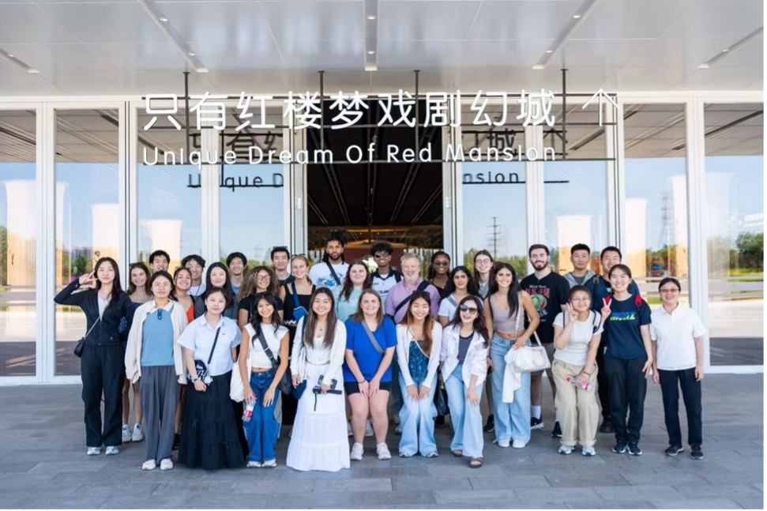
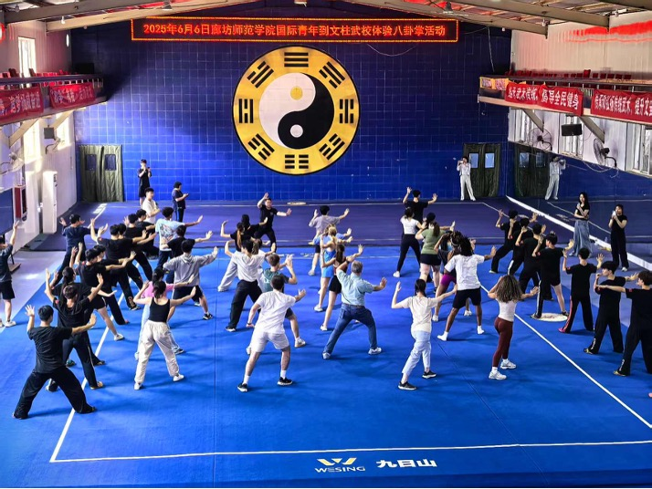

Langfang
Nestled between the bustling capital of Beijing and the dynamic port city of Tianjin, Langfang offers a captivating glimpse into modern China. This city of 5.6 million thrives on a unique blend of rich cultural heritage and cutting-edge advancements. While awe-inspiring landmarks like the Grand Epoch City draw visitors, Langfang also boasts serene nature parks and hidden treasures like the art of willow-knitting handicrafts and rejuvenating geothermal hot springs. Langfang promises an experience that goes beyond the typical tourist itinerary, offering a chance to delve into the city's distinctive character and the spirit of contemporary China.
Activities & Excursions:
- Cultural orientation and language workshops
- Visit the Langfang Silk Road Center and the Global Arts and Culture Center
- Interaction with Langfang University students
- Traditional Chinese calligraphy and art classes
- Visit the Unique Dream of Red Mansion theatrical complex

